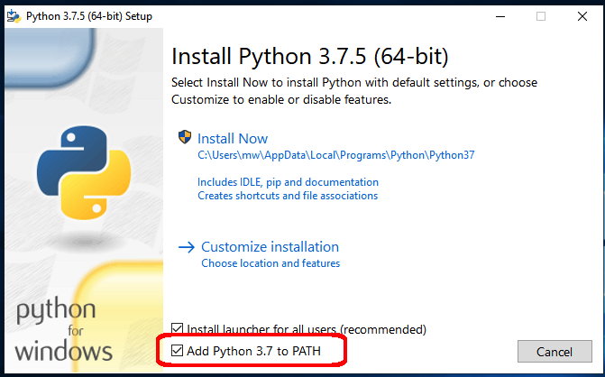

Python Installation¶
MW4 is a python3 application based on some python libraries and uses Qt as framework for GUI. Different to the past there will be no one box solution (MAC bundle, EXE File, etc.) available. As MW4 is python3 and comes with an internal updater functionality, it is using a standard python3 environment. Ideally and that is recommended in a virtualenv.
MW4 uses python 3.7, so as a first step please install if not already present the actual python 3.7 package. For all platforms there is an installer available. Please follow the descriptions coming with the installers. To give a short here are some quick installation hints for all platforms. The installers for Windows and OSx could be downloaded from python .org.
If you already have python3.7 installed, you could skip this section and go directly to MW4 installation process. If you have to install python3.7.5 this has to be done only once for as many MW4 installations you might want to do.
Windows¶
Depending on your Windows version please download the installer for 3.7.5 from:
https://www.python.org/downloads/windows/
and follow the installation procedure.
Warning
Please take care, that during the installation the checkbox “Add Python Path” is selected.
Depending on your preference you could install python 3.7.5 for a single user or for all users. MW4 does not need admin rights to run, so please feel free which variant you would like to choose.
Mac OSx¶
Depending on your OSx version please download the installer for 3.7.5 from:
https://www.python.org/downloads/mac-osx/
and follow the installation procedure. Depending on your preference you could install python 3.7.5 for a single user or for all users. MW4 does not need admin rights to run, so please feel free which variant you would like to choose.
Ubuntu¶
Referring to Ubuntu 18.04 LTS as it comes only with python3.6, you need to upgrade to python3.7. This could be done by adding an appropriate repo, which enables this version.
Warning
Please update to python3.7 in a way, which fits best to your environment. There are many descriptions out, so please search for it in case you don’t know exactly.
An example is from: https://linuxize.com/post/how-to-install-python-3-7-on-ubuntu-18-04/
sudo add-apt-repository ppa:deadsnakes/ppa
sudo apt-get update
sudo apt-get upgrade
sudo apt install python3.7
Please check the right version and the availability of virtualenv in your setup.